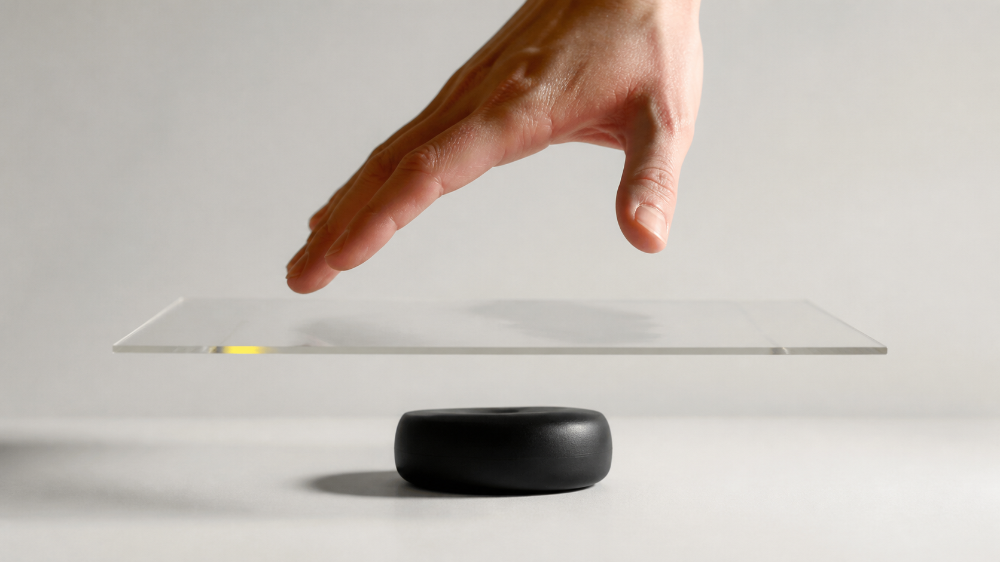
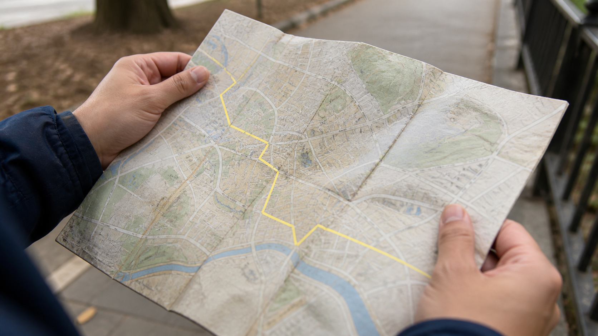

Gracias por la puntualidad
En breve comenzamos
Pensamiento
SENSORIAL
Clase 1
Sobre interfaces y mediaciones
Hola. Soy William Montoya.
Estudié Periodismo aquí, en la Universidad de Antioquia, y terminé dedicándome al diseño: a intentar entender qué pasa cuando las personas se encuentran con la tecnología.
Durante mucho tiempo pensé que diseñar era lograr que las cosas funcionaran mejor. Que fueran más eficientes. Que tuvieran menos fricción.
Pero a medida que pasaron los años, me di cuenta de que esa era una forma bastante mala de entender el diseño.
Una cosa puede funcionar perfectamente y aun así construir una relación terrible con quien la usa.
Sí, este es un curso de diseño, pero no sobre diseño de pantallas, o de flujos, o de procesos.
Es un curso para diseñar relaciones.
¿Cuál es el proyecto del que se sienten más orgullosos y por qué?
¿Qué querían que sintiera, pensara o hiciera la audiencia al encontrarse con ese proyecto?
Laboratorio 1
Lo que las cosas quieren de ti

Formen grupos de tres o cuatro personas. Saquen un objeto cotidiano, algo que usen constantemente, e intercámbienlo con el grupo de al lado.
Durante diez minutos no intenten decidir si el objeto está bien o mal diseñado.
Vamos a observarlo para tratar de entender qué tipo de relación nos está proponiendo.
¿Qué parece posible hacer con este objeto?
¿Qué parece esperar este objeto de quien lo tiene enfrente? ¿Cuidado, rapidez, precisión, paciencia, fuerza, exploración, confianza?
¿Hay algo que parezca difícil, incómodo o prohibido hacer?
Me gustaría que habláramos un poco de lo que significa usar algo.
¿Qué hace que un objeto sea difícil o fácil de usar?
El uso no está terminado dentro del objeto.
No todos usamos las cosas de la misma manera, con la misma intención o con los mismos mecanismos.
Incluso algo tan sencillo como escribir a mano es distinto para cada persona.
Yo escribo al revés: tomo el lapicero como si fuera zurdo, pero soy diestro. No por nada, simplemente por mi contexto.
El uso se construye en el encuentro entre una forma, un cuerpo, una situación, una historia y unas expectativas.
Un objeto puede sugerir una acción, pero no puede obligar por sí solo a que esa acción tenga el mismo sentido para todos.
Lo que llamamos “uso” es una relación que se construye.
¿QUÉ QUEDA
EN EL MEDIO?

Cuando una persona se encuentra con un objeto, no llega directamente a él.
Llega a través de su forma, sus materiales, sus señales, sus reglas, su contexto y de todo lo que ya aprendió antes.
Y el objeto tampoco llega intacto a la persona: le llega convertido en posibilidad.
“Esto se puede tocar”, “esto hay que cuidarlo”, “por aquí se empieza”, “esto no es para mí”.
Entre una persona y aquello con lo que se relaciona siempre hay algo que organiza el encuentro.
Hay una mediación.
¿Qué es para ustedes una interfaz?
¿Tiene interfaz una puerta, un ascensor, una máquina expendedora, un carro, un semáforo, una cafetera?
La interfaz es la mediación entre nosotros y un sistema.
A veces será una pantalla. A veces una manija. A veces una secuencia. A veces el ritmo de respuesta. A veces una regla compartida.
Alexander Galloway propone no pensar la interfaz como una ventana transparente, sino como una zona con lógica propia.
La interfaz no es solo el puente que cruzamos para llegar a otra cosa.
La interfaz también es un lugar donde algo nos pasa.
“Las interfaces no son simplemente objetos ni puntos de frontera. Son zonas autónomas de actividad. Las interfaces no son cosas, sino procesos que producen un resultado, del tipo que sea.”
Alexander Galloway — The Interface Effect (2012)
En la definición clásica, la interfaz es una capa, una membrana entre la persona y el sistema.
Pero las interfaces también organizan la forma en que nos relacionamos.
No es lo mismo escribir una carta, hacer una llamada, enviar un audio o mandar un mensaje por WhatsApp.
El afecto puede ser el mismo, pero no se comunica igual.
Cada medio organiza otras presencias, otras ausencias, otros tiempos y otras obligaciones.

Taller
El mismo mensaje, tres épocas
Piensen en un mensaje que le mandarían a su mamá —o a quien quieran— para avisarle que van a llegar tarde. Algo cotidiano.
Lo van a escribir una sola vez.
De los medios a las mediaciones
Cuando Jesús Martín-Barbero propuso mover la mirada de los medios a las mediaciones, pedía exactamente esto que acabamos de sentir.
No preguntarnos solo qué hace una tecnología, sino cómo adquiere sentido en relaciones que ya estaban ocurriendo.
Eso nos protege de un error frecuente: imaginar que el diseño llega a un terreno vacío.
Ninguna interfaz empieza desde cero. Siempre entra en una historia de relaciones.
El mundo que una interfaz deja pasar
Hay otra relación que las interfaces organizan todo el tiempo: la que tenemos con el mundo alrededor.
Un mapa convierte un territorio en orientación, distancia, ruta y frontera.

Un termostato convierte el clima en un número que se puede subir o bajar.
Una foto convierte un momento en encuadre, memoria y prueba.
Ninguno muestra el mundo entero.
Toda interfaz vuelve algo perceptible y deja otra cosa fuera de campo.
Ustedes ya manejan una interfaz de mediación muy sofisticada sin llamarla así.

En el dolly zoom, el personaje conserva su tamaño mientras el espacio se estira o se encoge.
El recurso no “muestra” el vértigo: construye una relación entre el espectador, el espacio y la sensación de perder el suelo.
La cámara media una experiencia que no podríamos recibir directamente desde el cuerpo del personaje.
Al principio hubo que aprender a leer ese gesto.
Hoy ocurre y sabemos algo: el mundo dejó de ser estable para quien está en pantalla.
Una mediación también puede ser un lenguaje sensible que aprendemos colectivamente.
Ninguna mediación es neutral
Hay mediaciones que se sienten muy presentes: una escalera demasiado alta, un juego difícil, un formulario que obliga a detenerse, un instrumento que exige meses de práctica.
Y hay mediaciones que se vuelven casi invisibles: un gesto que hacemos sin pensar, una convención audiovisual, la forma de entrar a una aplicación que usamos todos los días.
Cuando algo se vuelve habitual, deja de sentirse como una decisión.
Empieza a sentirse como el mundo.
Pero que una mediación sea familiar no la vuelve natural ni neutral.

¿Alguno de ustedes interactuó con este tipo de teléfono?
Su interfaz trae consigo una forma de habitar el tiempo, la espera, el error y el cuerpo.
No es una versión “primitiva” de lo que tenemos hoy, sino otra forma de mediar una relación.
¿La mejor interfaz es la que desaparece?
La industria suele responder que sí: una buena interfaz sería una que no se nota, una que nos deja llegar rápido a lo que queremos.
A veces tiene razón. Cuando pagamos una cuenta, buscamos una salida de emergencia o necesitamos ayuda urgente, la mediación no debería pedirnos que nos detengamos.
Pero hay experiencias valiosas que no quieren desaparecer.
Un instrumento musical quiere sentirse. Un videojuego difícil quiere exigirnos. Una cámara analógica quiere hacernos notar el tiempo, el material y la decisión.
Bolter y Gromala describen dos polos: la transparencia —miramos a través de la interfaz y la olvidamos— y la reflexión —la interfaz se hace notar y nos permite pensar la relación que estamos teniendo.
No es una escala de bueno a malo: son dos polos que se necesitan.
Entonces, ¿qué es una interfaz?
Tenemos ejemplos, tensiones y preguntas. Todavía no tenemos una definición. Eso está bien.
En la universidad, a veces la definición llega después de que el problema ya empezó a incomodar.
Intentemos una, pero escribámosla con fecha de vencimiento.
Versión 1.0 — Una interfaz es aquello que media una relación: la hace posible y, al hacerlo, la organiza, la traduce y la transforma.
La hace posible y, al hacerlo, la organiza, la traduce y la transforma.
Esa definición explica por qué una puerta, un cajero, un juego, un mapa, un chat y un instrumento pueden entrar a esta conversación.
También tiene problemas.
¿Dónde termina la interfaz de una conversación? ¿En las palabras, el tono, el cuerpo, el aire, la historia compartida?
¿La interfaz de un lapicero es la forma de agarrarlo, la tinta, el papel o la convención de escribir?
¿La interfaz de un juego de mesa está en las fichas o en las reglas que hacen que una ficha importe?
Si una interfaz media una relación, quien la diseña no controla por completo esa relación.
Las personas interpretan, resisten, inventan, se apropian y usan de maneras que no estaban previstas.
Diseñar es intervenir las condiciones desde las que una relación puede ocurrir.
Esa intervención tiene responsabilidad, aunque no tenga control total.
¿Qué relación quieren mediar entre las personas y aquello que diseñan?
Para empezar a responderla durante los próximos cuatro meses, necesitamos ponernos de acuerdo en cómo vamos a trabajar.
CÓMO VA A FUNCIONAR ESTE CURSO
Hasta ahora les he hecho muchas preguntas y les he prometido pocas respuestas. Eso no es casualidad.
La universidad no es venir a escuchar respuestas de alguien que sabe más: es el lugar donde aprendemos a hacer mejores preguntas.
No vamos a empezar por Figma ni por las herramientas: sería como intentar aprender literatura comenzando por la ortografía.
Primero aprendemos a leer —objetos, comportamientos, personas, sistemas, relaciones—; solo así podemos diseñar conscientemente.
Piensen este curso como un laboratorio donde hacemos tres cosas constantemente: observar lo que damos por obvio, construir prototipos y discutir con argumentos, no con gustos.
El curso como laboratorio: tres acciones que se repiten toda la semana, todas las semanas.
¿Qué espero de ustedes? Una sola cosa: curiosidad. El diseño de interacción, la investigación, la IA: eso lo aprendemos aquí; la curiosidad la traen ustedes.
Esa promesa se las cobro todo el semestre: pocas respuestas correctas —muchas veces no existen— y mejores preguntas cada semana.
Sobre las lecturas: algunas serán difíciles, y eso es intencional. Aprender un nuevo lenguaje siempre incomoda al principio.
Sobre la inteligencia artificial: la uso todos los días y aquí no está prohibida. Vamos a usarla y vamos a estudiarla.
Lo que sí importa: hay una diferencia enorme entre usar una IA para pensar mejor y usarla para dejar de pensar.
El semestre se mueve en cinco momentos: aprender a leer la interacción, elegir un territorio, explorar sus dimensiones, construir un modelo y defenderlo.
Cinco momentos. Cada uno prepara el siguiente.
Y cada sesión, en pequeño, hace el mismo gesto: empieza con una experiencia y termina con una pregunta abierta, para que el curso continúe cuando salgan del salón.
EVALUACIÓN
Ahora, la pregunta que todos esperan: ¿cómo los voy a evaluar?
No por tener razón, ni por memorizar autores: por cómo observan, cómo iteran y cómo argumentan sus decisiones.
En diseño casi nunca hay una única respuesta correcta: lo que hay son decisiones mejor fundamentadas que otras.
Una advertencia: en este curso no construimos proyectos enormes.
Prototipamos preguntas, no proyectos: aislamos una incertidumbre y la convertimos en un experimento.
Por eso no hay un proyecto final que aparece al terminar: la evaluación ocurre durante todo el semestre y cada entrega prepara la siguiente.
De hecho, hacia la sesión 6 ya queda evaluado el 40% del curso.
Cada entrega prepara la siguiente: la evaluación ocurre durante todo el semestre.
Y para que no haya sorpresas: no evalúo el acabado visual, ni la complejidad técnica, ni la herramienta, ni el tamaño del proyecto.
NO EVALÚO
- El acabado visual
- La complejidad técnica
- La herramienta utilizada
- La cantidad de pantallas
- El tamaño del proyecto
SÍ EVALÚO
- La capacidad de observar
- La calidad de las preguntas
- La experimentación
- El uso de evidencia
- La iteración
- La capacidad de argumentar
Una aclaración práctica: algunos de ustedes cursan simultáneamente Taller Multimedia Hipermedia y otros no. Existen dos rutas posibles.
Las dos rutas se evalúan con exactamente los mismos criterios.
Última cosa: aquí equivocarse no es un problema. Las mejores discusiones empezarán con un "yo estaba convencido de esto… hasta que encontré este otro caso".
Lo preocupante no es equivocarse: lo preocupante es dejar de hacerse preguntas.
Les propongo un trato: yo preparo clases que valga la pena discutir, y ustedes no se conforman con la primera respuesta. Si lo logramos dieciséis semanas, el curso habrá valido la pena.
Bitácora 1
Mirar lo que queda en el medio
Hoy observamos que una relación no llega terminada dentro de un objeto.
Esta semana quiero que reconozcan qué queda en el medio de tres interacciones cotidianas.
No busquen casos extraordinarios: mientras más comunes sean, más tendrán que mirar.
Elijan una experiencia que les dé confianza, una que les haga dudar y una que les frustre o detenga.
Puede ser una aplicación, un cajero, una puerta, una máquina expendedora, una consola de videojuegos, un ascensor, una cafetera, un semáforo, una página web o cualquier sistema con el que interactúen.
Para cada una, respondan seis preguntas. Nada más.
1. ¿Con qué o con quién querían relacionarse?
2. ¿Qué hizo posible la interfaz?
3. ¿Qué organizó o transformó en esa relación?
Tiempo, atención, cuerpo, información, afecto, riesgo o responsabilidad.
4. ¿Qué pistas, reglas o respuestas participaron?
5. ¿Qué quedó fuera, se volvió difícil o dependió de ustedes?
6. Si pudieran cambiar una sola condición de esa mediación, ¿cuál sería y qué relación distinta produciría?
No estamos entrenando la habilidad de encontrar errores. Estamos entrenando la capacidad de ver relaciones diseñadas.
Traigan las tres bitácoras listas y escritas a la próxima sesión: no las vamos a resolver en clase.
Además de la bitácora, lleguen la próxima semana con tres experiencias: cada una hace una pregunta distinta sobre las interfaces.
La primera es una lectura de Amelia Wattenberger: Our Interfaces Have Lost Their Senses.
Wattenberger propone que las interfaces digitales han ido perdiendo lenguaje: de las perillas, los cables y los botones a las pantallas táctiles, y ahora a una caja de texto.
La pregunta al leerla es sencilla: ¿qué sentidos utiliza esta interfaz y cuáles deja completamente por fuera?

La segunda experiencia es un juego: Stimulation Clicker. La idea no es ganar: es observar.
¿Qué acciones les pide repetir? ¿Qué hace con su atención? ¿Qué les comunica con movimiento, sonido, color y ritmo?

La tercera experiencia es fingerspelling.xyz. Van a necesitar una webcam.
La página enseña el alfabeto de la lengua de señas americana observando el movimiento de sus manos: aquí el cuerpo hace parte de la interfaz.
Las manos dejan de ser el mecanismo con el que hacen clic: se convierten en el lenguaje mismo.
Mientras la usan, pregúntense: ¿cómo sabe el sistema lo que estoy haciendo? ¿Cómo sé si lo hago bien? ¿Qué cambia cuando el cuerpo participa?

La próxima semana no vamos a hablar de cada experiencia por separado: vamos a compararlas.
Un ensayo, un videojuego y una herramienta para aprender lengua de señas parecen no tener nada en común.
¿Qué puede llegar a ser una interfaz cuando dejamos de pensar únicamente en pantallas, botones y texto?
Referencias
- Merleau-Ponty, M. Fenomenología de la percepción (1945).
- Galloway, A. R. The Interface Effect. Polity Press (2012).
- Martín-Barbero, J. De los medios a las mediaciones (1987).
- Dourish, P. Where the Action Is (2001).
- Norman, D. A. The Design of Everyday Things (ed. rev., 2013).
- Bolter, J. D. & Gromala, D. Windows and Mirrors (2003).